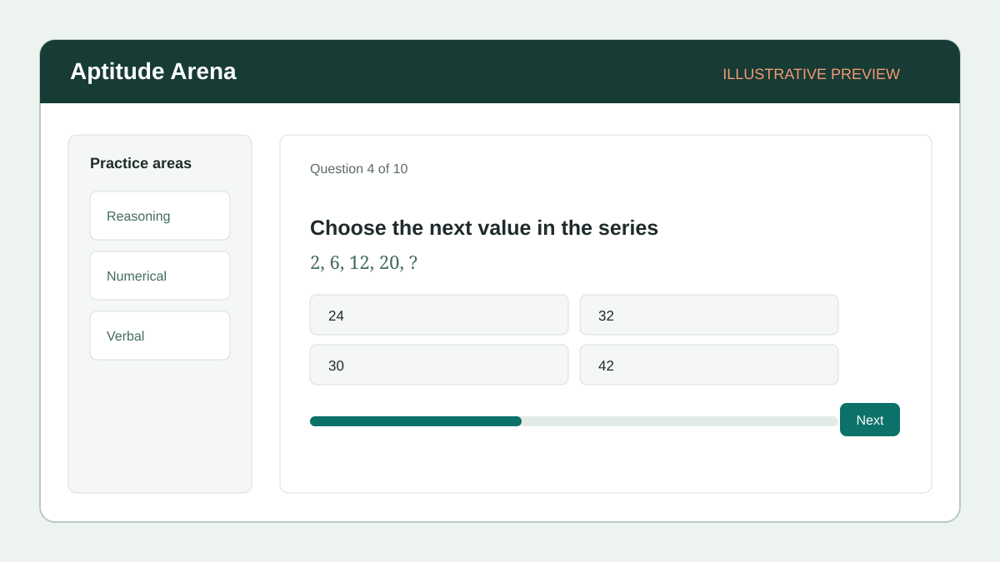
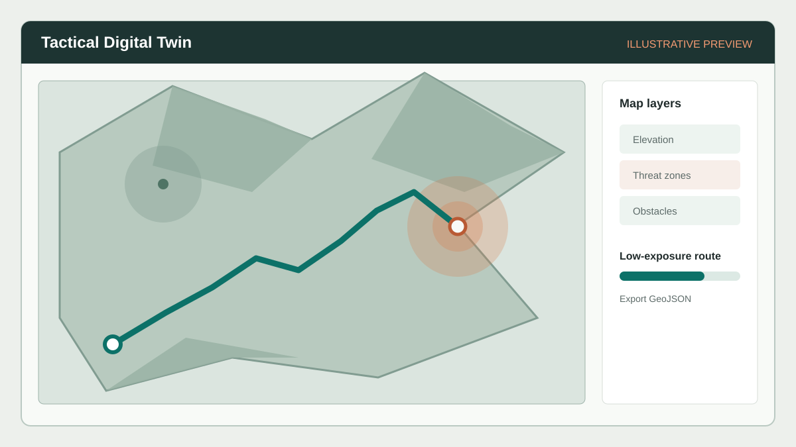

Nov 2025 – Mar 2026
Cyber Security & Ethical Hacking Intern
Datavalley India Pvt. Ltd. · with APSCHE
Open to opportunities across India
Entry-level developer with a B.Tech in Computer Science and Engineering (Artificial Intelligence) and hands-on project experience across web, mobile, real-time communication, and cybersecurity analysis.
I build practical software, from responsive interfaces to tools that help make security data easier to understand.
My project work includes a browser-based phishing email checker and CyberTrace, a digital-forensics timeline analyzer with unsupervised anomaly detection using Isolation Forest. I’m seeking entry-level AI engineering or full-stack developer opportunities and am open to remote, on-site, and relocation options across India.
GitHub profileDatavalley India Pvt. Ltd. · with APSCHE
SkillDzire
This responsive static portfolio uses semantic HTML, CSS, and lightweight JavaScript for themes, navigation, and scroll-aware interactions.
A browser-based email-risk checker that reviews common phishing signals and presents explainable warnings.

A full-stack aptitude practice platform with a Spring Boot API, React web app, and a separate Python AI scoring service.
A Python tool for gathering system logs into one incident timeline, normalizing timestamps, and visualizing security events.
A classroom screen-casting app designed for real-time LAN streaming, authentication, and attendance tracking.
An offline security audit and sanitizer for HAR files, implemented with only the Python standard library.
A customer-churn analysis covering hypothesis framing, data preparation, exploratory analysis, and a held-out retention-risk model.
A local Python CLI for validating BrightPath Logistics onboarding documents, flagging priorities, and producing workflow reports.

A self-contained local training simulation for fictional terrain, isometric map layers, low-exposure route generation, and GeoJSON export.
An Android social app using Kotlin and XML, with MVVM structure, Firebase authentication and storage, FCM notifications, and offline caching.
A repository whose README has not yet documented usable project details beyond the repository title.
A starter security operations dashboard for parsing SSH-style authentication logs, detecting login bursts, and exposing alerts.
A web platform intended for teachers to share learning materials, manage classrooms, and monitor participation.
A Next.js recruitment and technical-assessment project. Its README provides standard Next.js setup guidance; no additional application behavior is inventoried here.
An internal Smart India Hackathon college management and intelligence platform. The repository has limited README documentation.
Narasaraopeta Engineering College, Narasaraopet, Andhra Pradesh · JNTUK, Kakinada
CGPA: 7.0 / 10
NPTEL
Sololearn
TeluguNative
EnglishFluent
HindiFluent
TamilBasic
Open to remote, on-site, and relocation